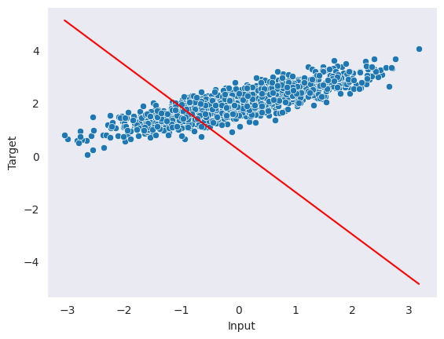
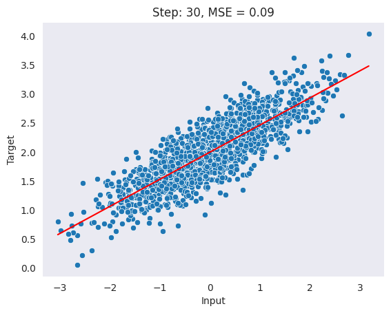

import torch
## initializing a anb b with requires grad = True
a = torch.tensor([5.], requires_grad=True)
b = torch.tensor([6.], requires_grad=True)
y = a**3 - b**2
ytensor([89.], grad_fn=<SubBackward0>)In PyTorch, autograd automatically computes gradients. It is a key part of PyTorch’s deep learning framework and is used to optimize model parameters during training by computing gradients of the loss function with respect to the model’s parameters.
Autograd can compute gradients for both scalar and vector-valued functions, and it can do so efficiently for a large variety of differentiable operations, including matrix and element-wise operations, as well as higher-order derivatives.
Let’s take a simple example of looking at a function. \[y = a^3 - b^2 + 3\]
Differentiation of this function with respect to a and b is going to be:
\[\frac{dy}{da} = 3a^2\]
\[\frac{dy}{db} = -2b\]
So if: \[a = 5, b = 6\]
Gradient with respect to a and b will be: \[\frac{dy}{da} = 3a^2 => 3*5^2 => 75\]
\[\frac{dy}{db} = -2b => -2*6 => -12\]
Now let’s observe these in PyTorch. To make a tensor compute gradients automatically we can initialize them with requires_grad = True.
import torch
## initializing a anb b with requires grad = True
a = torch.tensor([5.], requires_grad=True)
b = torch.tensor([6.], requires_grad=True)
y = a**3 - b**2
ytensor([89.], grad_fn=<SubBackward0>)To compute the derivatives we can call the backward method and retrieve gradients from a and b by calling a.grad and b.grad.
y.backward()
print(f"Gradient of a and b is {a.grad.item()} and {b.grad.item()} respectively.")Gradient of a and b is 75.0 and -12.0 respectively.As computed above the gradient of a and b is 75 and -12 respectively.
In this section, we will implement a linear regression model in PyTorch and use the Autograd package to optimize the model’s parameters through gradient descent.
Let’s begin by generating linear data that exhibits linear characteristics. We will use the sklearn make_regression function to do the same.
## Importing required functions
import torch
import numpy as np
import pandas as pd
import matplotlib.pyplot as plt
from sklearn.datasets import make_regression
import seaborn as sns
import time
from IPython.display import clear_output
sns.set_style("dark")
%matplotlib inline
def plot_data(x, y, y_pred=None, label=None):
clear_output(wait=True)
sns.scatterplot(x=X.squeeze(), y=y)
if y_pred is not None:
sns.lineplot(x=X.squeeze(), y=y_pred.squeeze(), color='red')
plt.xlabel("Input")
plt.ylabel("Target")
if label:
plt.title(label)
plt.show()
time.sleep(0.5)## Generate some dataset
X, y, coef = make_regression(n_samples=1500,
n_features=1,
n_informative=1,
noise=0.3,
coef=True,
random_state=0,
bias=2)
X = torch.tensor(X, dtype=torch.float32)
y = torch.tensor(y, dtype=torch.float32)
plot_data(X, y, label=f"Coefficient: {coef:.2f}, Bias:{2}")
Since we are only building a simple linear regression with one feature and one bias term. It can be defined as the following -
class Linear:
def __init__(self, n_in, n_out):
self.w = torch.randn(n_in, n_out).requires_grad_(True)
self.b = torch.randn(n_out).requires_grad_(True)
self.params = [self.w, self.b]
def forward(self, x):
return x @ self.w + self.bThis code above defines a class called Linear that represents a simple linear regression model. In this case, the __init__ takes two arguments: n_in and n_out, which represent the dimensions of the input and output of the linear regression model. The __init__ method initializes the weight matrix w and the bias vector b to random values, and also sets them to be requires_grad to True, which means that the gradients of these parameters will be calculated during backpropagation. The forward method defines the forward pass of the linear regression model. It takes an input x and applies the linear transformation defined by w and b, returning the model prediction.
Let’s initialize the model and make a random prediction.
## Initializing model
torch.manual_seed(4)
model = Linear(X.shape[1], 1)
## Making a random prediction
with torch.no_grad():
y_pred = model.forward(X).numpy()
## Plotting the prediction
plot_data(X, y, y_pred)
The code above generates random predictions that do not fit the data well. The torch.no_grad() context manager is used to prevent torch from calculating gradients for the operations within the context.
To improve the model’s performance, we can use the autograd function to create a simple gradient descent function called step, which runs one epoch of training. This will allow us to optimize the model’s parameters and improve the accuracy of our predictions.
def step(X, y, model, lr=0.1):
y_pred = model.forward(X)
## Calculation mean square error
loss = torch.square(y - y_pred.squeeze()).mean()
## Computing gradients
loss.backward()
## Updating parameters
with torch.no_grad():
for param in model.params:
param -= lr * param.grad.data
param.grad.data.zero_()
return lossLet’s walk through the step function:
for i in range(30):
# run one gradient descent epoch
loss = step(X, y, model)
with torch.no_grad():
y_pred = model.forward(X).numpy()
# plot each step with delay
plot_data(X, y, y_pred, label=f"Step: {i+1}, MSE = {loss:.2f}")
As observed above, our model’s performance improved with each epoch and the mean squared error (MSE) decreased consistently.
print(f"True coefficient is {coef.item():.2f} and predicted coefficient is {model.w.item():.2f}.")
print(f"True bias term is {2} and predicted coefficient is {model.b.item():.2f}.")True coefficient is 0.48 and predicted coefficient is 0.47.
True bias term is 2 and predicted coefficient is 2.00.Autograd is a key part of PyTorch’s deep learning framework and is an essential tool for optimizing and training neural network models. It is designed to make it easy to implement and train complex models by automatically computing gradients for differentiable operations.